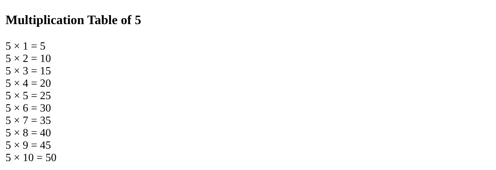

Write a PHP code to print multiplication table using loops.
Program 3.6: Printing a Multiplication Table Using a Loop
Concepts used
The for loop, its initialisation, condition and update, the multiplication operator.
Test data: Number: 5. The table is printed from 5 × 1 to 5 × 10.
Logic
- Store the number whose table is required.
- Start a counter at 1.
- While the counter is at most 10, print the number, the counter and their product.
- Increase the counter by 1 and repeat.
Code
<!DOCTYPE html><html lang="en"><head> <meta charset="UTF-8"> <title>Multiplication Table</title></head><body> <?php $number = 5; echo "<h3>Multiplication Table of $number</h3>"; for ($i = 1; $i <= 10; $i++) { $product = $number * $i; echo "$number × $i = $product<br>"; } ?></body></html>
Output
These are real screenshots, taken by running the program with the test data.

Understanding the output
The ten lines were produced by one echo statement executed ten times, once for each counter value from 1 to 10. Changing $number to 7 prints the table of 7, and changing the condition to $i <= 20 extends the table to twenty lines, without adding any further statement.
How it works
The initialisation $i = 1 runs once. Before each iteration, the condition $i <= 10 is tested. In each iteration, the product of $number and $i is calculated and printed; × is the HTML code for the multiplication sign ×, which the browser displays. After each iteration, $i++ increases the counter by 1. After the tenth line, $i becomes 11, the condition 11 <= 10 becomes false, and the loop ends.
Run it yourself
Real PHP 8.3 runs inside your browser (nothing is sent to a server). Forms, links, cookies and sessions work as they do in XAMPP. The first run downloads PHP, so it needs internet and takes a few seconds.
Try this:
- Change
$numberto 7. - Change the loop condition to
$i <= 20to print twenty lines.
Running it in XAMPP
Save the file in C:\xampp\htdocs\phpbook\ch03 and open http://localhost/phpbook/ch03/table.php.
Common mistakes
- Writing
$i< 10, which stops after 5 × 9 and omits the last line. - Separating the three parts with commas instead of semicolons.
- Writing
$i-- instead of$i++, so that the counter moves away from 10 and the loop never ends. - Placing a semicolon after the closing parenthesis, as in for (...);, which repeats an empty statement and then executes the block only once.
- The same table can also be printed with the while and do-while loops, as shown in the next two sections. The choice of loop depends on how the repetition is controlled.
Viva questions
Name the loops of PHP.
What are the three parts of a for loop?
for ($i = 1; $i <= 10; $i++).